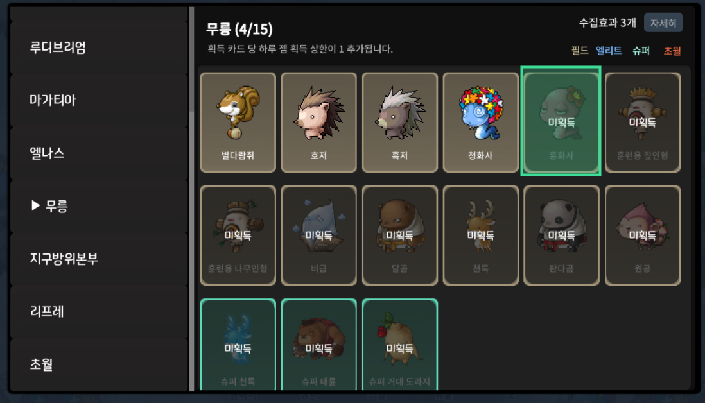

도감 화면을 띄운 상태로 화면 선택을 시작한 뒤, 확인하고 싶은 카드 하나의 미획득 글자와 어두운 오버레이가 들어가도록 영역을 드래그해 주세요.
사용법
도감 화면을 열고 미획득 표시 영역을 선택하세요.
도감 카드 전체보다 미획득 글자와 어두운 오버레이가 보이는 영역을 타이트하게 드래그하면 감지가 안정적입니다. 감시 시작 후 해당 표시가 사라지면 획득으로 판단해 알림을 보냅니다.

Discord 인증
로그인 상태를 확인하는 중입니다.
감시 설정
화면 선택 후 도감 카드의 미획득 표시가 보이는 영역을 드래그하세요.
감시 영역 미리보기
감시 상태
대기 중
감시를 시작하면 변화량이 여기에 표시됩니다.